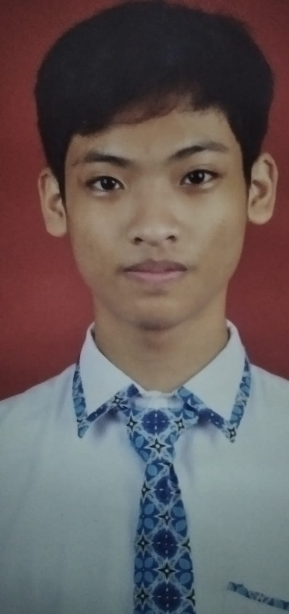

Banyu Nurmanjaya

HALO!
Nama saya Banyu. Saat ini saya merupakan siswa kelas 10 Program
Keahlian Pengembangan Lunak dan Gim (PPLG) SMK Wikrama Bogor.
Saya sedang mengembangkan keahlian diri dalam bidang Front End Development.
Ingin berkenalan?
Hubungi saya melalui Instagram atau Email.
Banyu Nurmanjaya
Bogor, 5 April 2005
Instagram : banyu_nurm03
Email : banyunurmanjaya@smkwikrama.sch.id
PENDIDIKAN
| Sekolah |
Tahun |
| SMK Wikrama |
2021-selesai |
| SMP YPC Cisarua |
2018-2021 |
| SDN Cisarua 01 |
2012-2018 |
PENGALAMAN ORGANISASI
- Pratama Pramuka SMP YPC Cisarua 2019-2021
- Juara umum YAPIZA tingkat Bogor 2019
- Juara 2 sandi dan 2 menaksir arus sungai tingkat Jawa Barat dan Banten
- Juara 2 kompas Galang 2018
- Juara 1 dan 2 SMA SMANIC 2019
SKILL PASSPORT
- Menginstalasi tools yang diperlukan untuk membuat website statis.
- Menyusun kerangka website statis menggunakan HTML.
- Menggunakan CSS eksternal untuk mengatur tampilan website statis.
- Membuat tampilan website statis menjadi rensponsive
- Meluncurkan dan memelihara website statis
INSPIRASI
game.com
Dengan mengahadirkan game di website dengan gratis yang membuat pertama kali saya terpikirkan bagaimana cara membuat web tersebut.kejar.id
web yang satu ini juga selalu timbul dipikiran saya bagaimana cara membuatnya, cara buat backgroundnya, dan berapa orang yang terlibat di web ini untuk menjalankan webnnya.Miniclip.com
Adalah situs game gratis yang menemani saya waktu kecil di warnet, menghadirkan banyak game yang classic dan simple